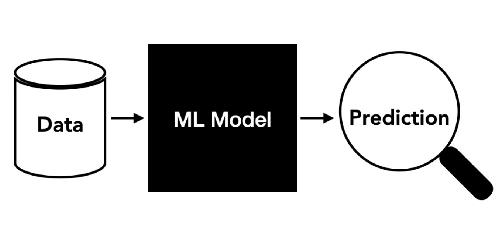
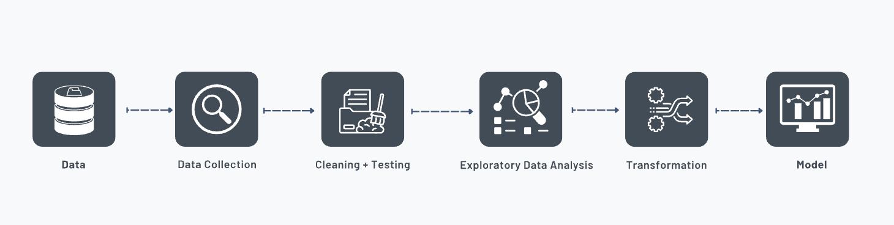

Welcome to my blog!

Introduction
Machine learning is a field that in a way bridges mathematics, computing, and real-world challenges. In this blog, I’ll share my teams approach to predicting house prices using Ridge Regression, a robust linear model. My objective is to demonstrate how machine learning, paired with a deep understanding of data techniques, can uncover practical and actionable insights into complex problems.
We began by addressing a fundamental question: Can predicting house prices offer value to various stakeholders? The answer was a resounding yes. A predictive model not only provides an estimation of property values but also highlights the key factors driving those values, offering insights for stakeholders such as homeowners, buyers and banks.
To achieve this, we used the publicly available 2023 Property Tax Assessment dataset from Strathcona County. This dataset served as the foundation for our analysis, allowing us to build a predictive model that explores the relationship between property features and their assessed values.
This project will show the usefulness of machine learning in solving real-world problems by combining mathematical rigor with computational efficiency. In the next sectionI will go over the process of predicitng house prices using a machine learning Ridge regresssion model.
Why Predicting House Prices?
Housing markets are complex systems influenced by numerous factors. Accurately predicting house prices is not only a mathematical challenge but also has important implications:
- Economic Trends: House prices can reflect broader economic patterns.
- Transparency: Accurate predictions promote trust and informed decision-making in the housing market.
- Affordability: Understanding price drivers can help address housing affordability issues.
By applying Ridge Regression, a method grounded in solid mathematical foundations, we sought to explore the relationships between property attributes and their market values.
The Dataset
We worked with the 2023 Property Tax Assessment dataset, which provided detailed attributes for each property, including:
- Meters: Numeric, representing property size.
- Garage: Binary (Y/N) for the presence of a garage.
- Fireplace: Binary (Y/N) for having a fireplace.
- Basement: Binary (Y/N) for having a basement.
- Building Evaluation: Binary (Y/N) for whether the building was evaluated.
Our target variable, assess_2022, represented the assessed value of each property. The dataset’s structured nature and rich feature set made it ideal for building a predictive model
Why Ridge Regression?
In machine learning, multicollinearity—when features are highly correlated—can lead to unstable predictions. Ridge Regression, a regularized linear regression model, addresses this by adding a penalty term to the loss function, effectively shrinking the coefficients of less significant features.
From a mathematical perspective, Ridge Regression minimizes:
\[\text{Loss} = \text{RSS} + \lambda \sum_{j=1}^{p} \beta_j^2\]
Where lambda (\(\lambda\)) controls the strength of the penalty term. This helps improve model stability and ensures better generalization to unseen data.
Our Approach
We followed a Data Science work flow. This is essentail because a workflow provides structure and ensures consistency throughout a project. A clear workflow acts as a roadmap, guiding you through each step systematically, which helps prevent skipping crucial tasks like data cleaning or model evaluation. It improves efficiency by reducing redundant efforts and enables reproducibility, ensuring that results can be validated or replicated by others. A workflow also aligns with the overall goal of the project. It also promotes data integrity by addressing issues like missing values and biases early in the process and facilitates effective decision-making by producing valid and actionable insights

Here’s how we structured our process:
1. Data Validation
Before diving into modeling, we validated the dataset to ensure:
- Correct column names and data types.
- No missing values or duplicate records.
- No extreme outliers that could skew results.
2. Exploratory Data Analysis (EDA)
Using tools like Altair, we visualized relationships between features and house prices:
- Scatter plots showed a strong positive correlation between meters (property size) and
assess_2022.
- Correlation matrices highlighted interactions among features, such as a positive relationship between basements and building evaluations.
3. Preprocessing and Feature Engineering
We prepared the data for modeling:
- Numerical Features: Standardized using a scaler to ensure uniformity.
- Categorical Features: One-hot encoded to convert binary variables into numerical form.
- Column Transformer: Combined preprocessing steps into a single pipeline for streamlined transformation.
4. Model Training
We split the dataset into training (70%) and testing (30%) sets. Using Scikit-learn, we implemented Ridge Regression with a pipeline that combined preprocessing and model training. The sklearn library contains a lot of efficient tools for machine learning and statistical modeling including classification, regression, clustering and dimensionality reduction.
5. Model Evaluation
We evaluated our model using 5-fold cross-validation to ensure robustness. Metrics like R² (coefficient of determination) helped quantify how well the model explained variance in house prices.Five-fold cross-validation (CV) is a process when all data is randomly split into k folds, in our case k = 5, and then the model is trained on the k − 1 folds, while one fold is left to test a model
Results & Insights
Our Ridge Regression model achieved the following:
- Training R² Score: 0.575
- Testing R² Score: 0.564
In ridge regression, the training score measures how well the model fits the data it was trained on. It shows how accurately the model predicts the outputs for the training dataset. A high training score means the model has learned the patterns in the training data well.
The testing score evaluates how well the model performs on new, unseen data (the testing set). It tells you if the model can generalize its learning to other data. A large gap between the training and testing scores might indicate overfitting (model does well on training data but poorly on testing data) or underfitting (model does poorly on both).
These results indicate the model generalizes well without significant overfitting. We also predicted prices for 10 new houses with diverse attributes. Here’s what we found:
- Larger houses with features like garages and fireplaces had higher predicted values.
- A house with 174 square meters, a garage, and a fireplace was valued at $537,035, while a smaller house with no extra features was valued at $212,530.
Key Insight: Property size was the most influential feature, but additional amenities like garages and fireplaces significantly boosted value.
Real-World Applications
This approach has applications beyond housing markets:
- Insurance: Predicting premiums based on property attributes.
- Retail: Estimating sales based on store characteristics.
- Healthcare: Modeling patient treatment costs based on medical history.
The principles of feature selection, preprocessing, and model evaluation are transferable across domains.
Engaging with Machine Learning
As a software engineering graduate, you might enjoy experimenting with this process. Here are some ideas:
- Visualize Feature Relationships: Use Altair to plot scatter plots or correlation heatmaps for your own data.
- Explore Regularization: Experiment with different values of lambda \((\lambda)\) in Ridge Regression to see how it impacts performance.
- Try Advanced Models: Compare Ridge Regression to tree-based models like Random Forest or Gradient Boosting.
Conclusion
This project demonstrates how machine learning can bridge mathematics and computing to provide actionable insights. By leveraging Ridge Regression, we built a model that not only predicts house prices but also reveals the key drivers of value.
Key Takeaways:
- Ridge Regression handles multicollinearity effectively, making it a great choice for structured data.
- Preprocessing and feature engineering are critical for model success.
- Machine learning is a versatile tool that can be applied to a wide range of domains.
What Next?
I hope this blog inspires you to explore machine learning further. Whether it’s house prices, healthcare, or another field. This is because the possibilitie in the field of machine learning are endless.